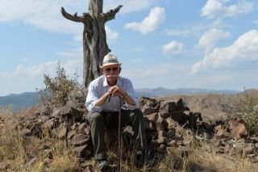
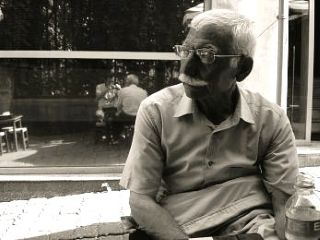
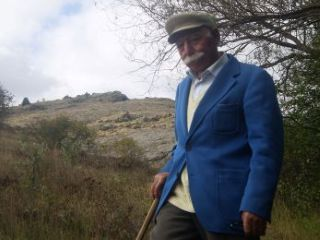
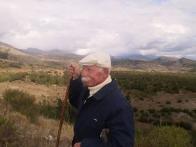
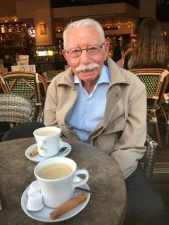

Hayat ve Hak yolu
1931 yılında dünyaya gözlerini açtı. Hayata adım attığı ilk andan itibaren doğanın, insanın ve hakikatin izinde bir ömür sürdü.
Çocuk yaşta yetim kalıp zorlu şartlar altında büyüdü. Takvimler 1965’li yılları gösterdiğinde, ekmek parasını kazanmak ve ailesine destek olmak için gurbet yollarına düştü. Genç yaşta Almanya’ya adım attı; gurbetin o ilk çetin, ilk yabancı günlerini onuruyla göğüsledi. Bir dönem memleketine dönse de helal lokma kazanma mücadelesi onu yeniden yollara düşürdü ve ömrünün büyük bir kısmı sıla ile Almanya gurbeti arasında mekik dokuyarak geçti. Gençlik yılları, bu gurbet elin tüm zorluklarına rağmen dürüstlük ve alın teri dökme gayretiyle aktı. "İlimden gidilmeyen yolun sonu karanlıktır" düsturunu rehber edinerek, hem çalıştı hem de hayatın acılarına karşı sabırla ve rızalıkla direndi.
Hak-Muhammed-Ali aşkına, iki cihanda ayrılmamak üzere Senem Can ile kutsal evlilik ikrarı verdi; eşiyle özünü bir, sözünü bir eyleyip, rıza kapısında kurdukları yuvayı Yol’un ve erkanın sancağı altında mihman eyledi. Bu rıza kapısında kurdukları yuva, üç evlat ile bereketlendi ve dört torun sahibi oldu. "Dört Kapı Kırk Makam" eşiğinden geçerek, Şah-ı Merdan Ali und Hacı Bektaş-ı Velî’nin kutsal müsahiplik ikrarıyla Yol'a baş koydu; musahibiyle malı mala, canı cana katıp, Hak meydanında ölmezden önce ölenlerden oldu. Ömrü boyunca ailesine, musahibine ve cümle canlara her daim bir Hızır gibi yetişmeye çalıştı; sofrasını, lokmasını und gönlünü herkese açtı.
Yaşı ilerledikçe ailesinin çınarı, çevresinin akıl hocası oldu. Sazının teline, sözünün özüne sadık kalarak barışı, hoşgörüyü ve birliği savundu. Geriye kırılmaz gönül köprüleri und saygıyla anılacak bir isim bıraktı.
Dünyadaki mihmanlığını onuruyla, tertemiz bir rızalıkla tamamlayıp Hakk’a yürüdü. Evrenin bir parçası olarak aslına geri döndü; toprağa, suya und havaya karıştı. Bize miras bıraktığı sevgi, sadakat und unutulmaz anılar her zaman kılavuzumuz olacak. Devri daim olsun, sevgisi kalbimizde ebediyen yaşayacak.
Unutulmaz Anlar




